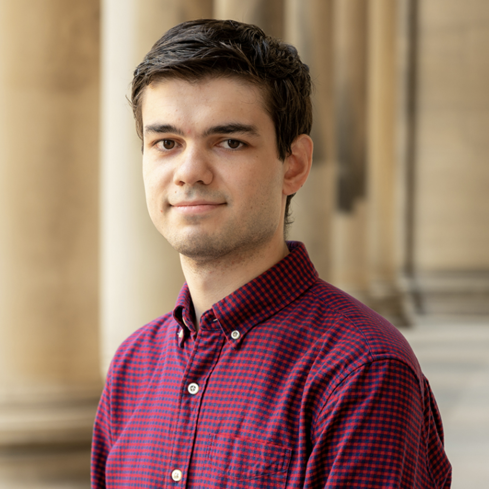

We apply theoretical and computational modeling of structure–function relationships in biological macromolecules, such as enzymes and membrane ion-channel receptors, to glean new insights into biologically and industrially important systems. We use combined molecular dynamics and AI approaches such as Active Learning to quickly explore chemical spaces for in silico drug design. Recently, our efforts yielded a 1st place finish in the Critical Assessment of Computational Hit-Finding Experiments (CACHE) Challenge #1, an international computational drug discovery competition.
Announcements

Congratulations Dr. Evgeny Gutkin on His Recent Thesis Defense!

Congratulations Muhammed on his Recent Nature Publication!
Kainate receptor channel opening and gating mechanism